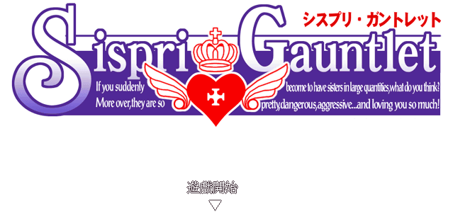
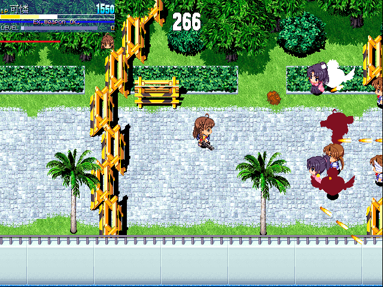

名稱：妹妹公主射擊版／妹姬射擊 (Sispri Gauntlet，簡中版)
簡介：日本D5 2004年出品的第三人稱射擊同人遊戲，使用「妹妹公主（Sister Princess）」
動漫的角色 [待補]。


備註：本版為2005年2.6版簡中漢化版
保護：無
修改：sg.exe（簡中版）
1.不損血
2B C8 83 F9 FF 74
90 90 -- -- -- --
2B C2 83 F8 FF (共2個)
90 90 -- -- --
檔案：sisshare.rar = 2007年最終版（日文版）
操作：
Z = 一般攻擊
X = 鎖定攻擊方向（按住不放）
C = 交換角色
Home/Alt-F4 = 強制退出遊戲